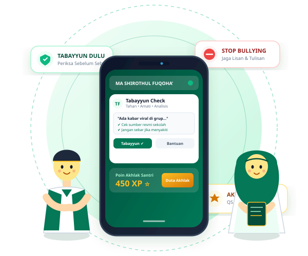

TABAYYUN DIGITAL MA SHIROTHUL FUQOHA’
Cerdas Memeriksa Informasi, Bijak Berkomentar, dan Berakhlak Tanpa Bullying.

Kenali Bentuk-Bentuk Bullying
Pelajari dan kenali perbedaan kekerasan fisik, celaan lisan, pengucilan sosial, hingga perundungan siber di media sosial.
Bullying atau Bercanda?
Banyak perundungan disamarkan dengan kata "cuma bercanda". Uji kepekaan empatimu dalam 7 skenario nyata kehidupan santri & pelajar.
Ayat untuk Akhlak Digital
Dua pedoman luhur Al-Qur'an dalam menjaga kehormatan sesama dan menjaga etika tutur kata di era teknologi modern.
Metode 8 Langkah Tabayyun Digital (T-A-B-A-Y-Y-U-N)
Tabayyun Digital = Periksa sebelum percaya dan sebarkan. Ikuti rumus 8 langkah T-A-B-A-Y-Y-U-N berikut sebelum membagikan informasi apapun.
Simulasi Kasus Tabayyun
Latih kemampuan berpikir kritis dan berakhlak mulia menghadapi 8 situasi digital yang sering terjadi di lingkungan madrasah dan media sosial.
Think Before You Post
Gunakan checklist 7 langkah ini sebelum mengunggah status, foto, video, atau mengirim chat di grup kelas.
📋 Checklist Unggahan Aman & Berakhlak
🧪 Uji Draf Pesan / Caption
Ketikkan kalimat yang ingin kamu posting untuk memeriksa apakah terdapat indikasi kata celaan kasar atau nada marah.
Kuis: Benar atau Salah?
Jawab 10 pertanyaan seputar mitos & fakta bullying, privasi digital, serta etika bermedia menurut syariat Islam.
Apa yang Harus Saya Lakukan?
Menjadi saksi (bystander) perundungan membutuhkan keberanian bijak. Melawan bullying bukan berarti melakukan bullying balik kepada pelaku.
Laporkan Bullying
“Jika kamu atau temanmu mengalami bullying, jangan menghadapi semuanya sendirian. Melapor bukan berarti mengadu (cepu), melainkan mencari bantuan agar masalah diselesaikan dengan aman.”
📝 Asisten Penyusun Catatan Konsultasi Privat
Fitur ini membantu menyusun draf catatan kronologi secara terstruktur di perangkatmu sendiri tanpa menyimpan data ke server luar (100% privasi terlindungi).
Refleksi Diri Pelajar
Jawablah 7 pertanyaan ini dengan jujur dalam hati untuk mengenali jejak komunikasi digitalmu.
Peringkat Akhlak Digital
Dapatkan Poin Akhlak (XP) dengan menyelesaikan materi, kuis benar/salah, simulasi kasus, serta refleksi diri.